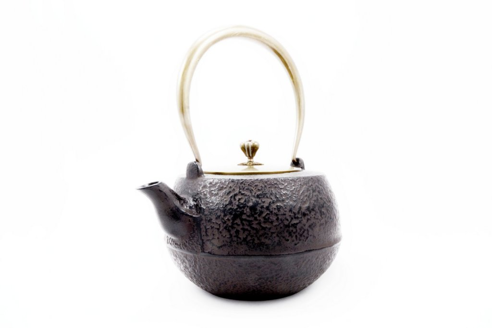
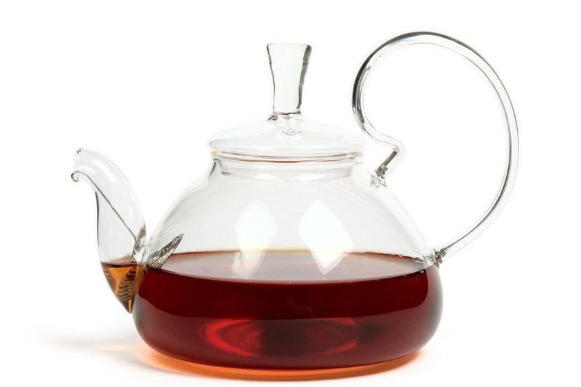
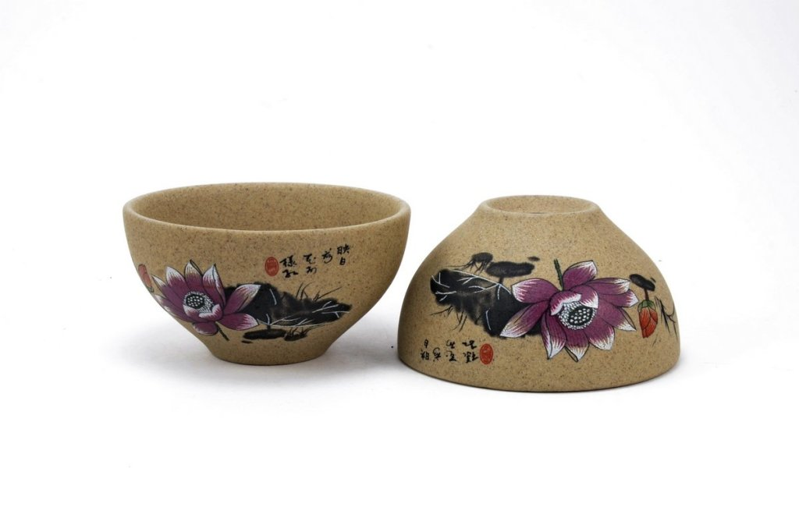
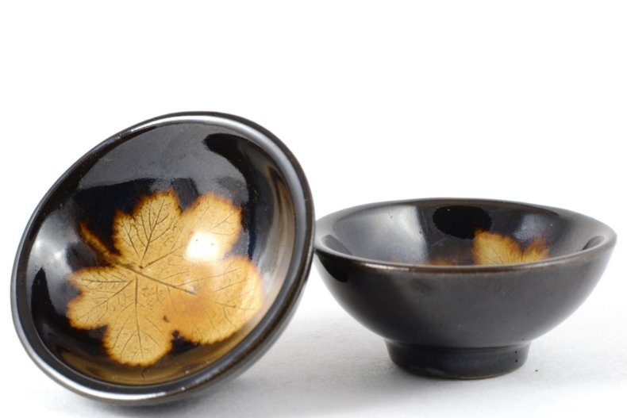
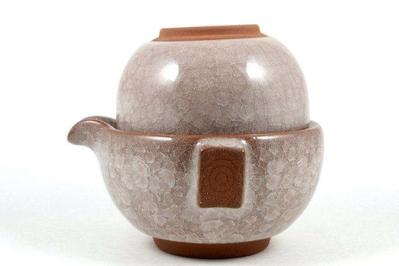
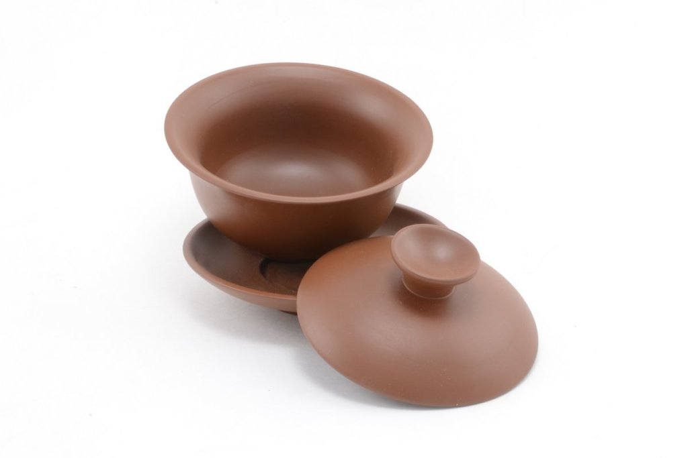

Чайник
Чайник — один из главных инструментов чаепития. Заварочный чайник (Ча Ху, в китайской терминологии) берет свое начало в далеком XVI в н.э. На сегодняшний день существует огромное количество разновидностей чайников – это и фарфоровые, и глиняные, и стеклянные, различных форм и размеров. Используются они для различных целей чаепития, а также особенностей сорта чая. Каждый из таких чайников имеет свои отличительные преимущества.
Для полного раскрытия потенциала чая, в частности пуэров, выдержанных и слабо-ферментированных улунов, красных чаев, прекрасно подойдет глиняный чайник. За счет пористой структуры и способности поддерживать необходимую температуру они дают возможность чаю полноценно раскрыть свой вкусовой букет.
В случае с белым, зеленым и желтым чаем лучше всего подойдут чайники из фарфора и стеклянные чайники. Это не значит, что другие чаи в такой посуде будут завариваться хуже, вовсе нет. Эти материалы в принципе универсальны и подойдут для любого сорта. Однако наиболее полноценно в них раскрываются именно приведенные чуть выше группы чаев. Легкий, тонкостенный чайник с быстрым сливом – идеальное решение для утонченных чаев.
Нельзя забывать и об эстетической стороне вопроса. Заварочный чайник, имеющий определенные цвета, фактуру, материал и форму, может создать свое настроение чаепития. Поэтому выбирайте в первую очередь именно то, что вам по душе.
 Купить
Пиала
Современные стеклянные пиалы с двойными стенками не обжигают руки при любой температуре воды. Традиционная пиала — это керамическая чаша без ручек, наиболее распространенный вид посуды для питья чая на востоке. Небольшие чайные чаши или пиалы отлично подходят для употребления качественного китайского чая. Китайский чай заваривается многократно, при этом каждая заварка дает новый вкус и аромат, отличный от предыдущего. Поэтому употребления чая из посуды мелких объемов дает более полную и яркую картину ароматов и вкусов чудесного напитка. Вы также можете купить традиционную чайную посуду из керамики или жаропрочного стекла.
 Купить
Гайвань
Гайвань (盖碗; Gàiwǎn; Гай Вань) переводится как «чаша с крышкой».
Гайвань – это, пожалуй, самый распространенный вид посуды для заваривания чая в Китае. Гайвань является универсальным инструментом для заваривания, подходит для любого вида чая. Используется как в качестве «чайника», так и в качестве чашки. В первом случае чай заваривается в гайване и далее переливается в чахай или сразу по пиалам. Во-втором случае чай заваривается и употребляется непосредственно из гайвани.
Гайвань состоит из самой чашки, крышки и блюдца. Бывают из различных материалов: из фарфора, стекла, глины. Так же и различных объемов: от 80-100 мл для индивидуального использования, так и большие, объемом более 250 мл, если Вы устраиваете чайную церемонию для компании. Нужно отметить, что хоть гайвани бывают различных видов и размеров, но у всех есть одна особенность – между чашкой и крышкой всегда есть небольшой зазор, иногда крышку просто нельзя положить «ровно». Это сделано специально, что бы инструментом было удобнее пользоваться.
 Купить